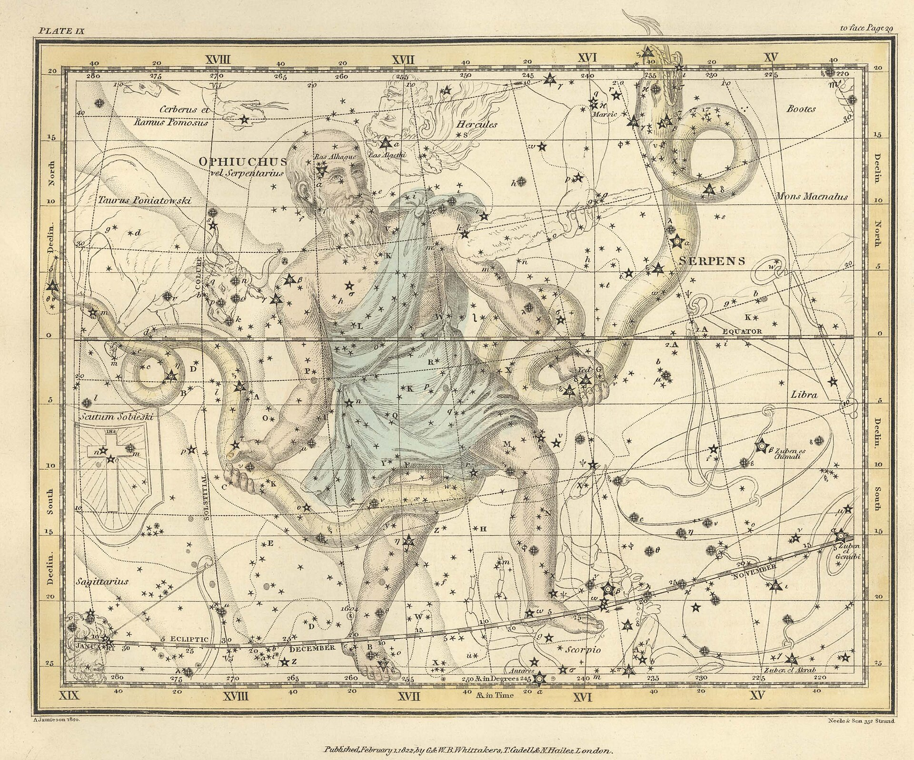
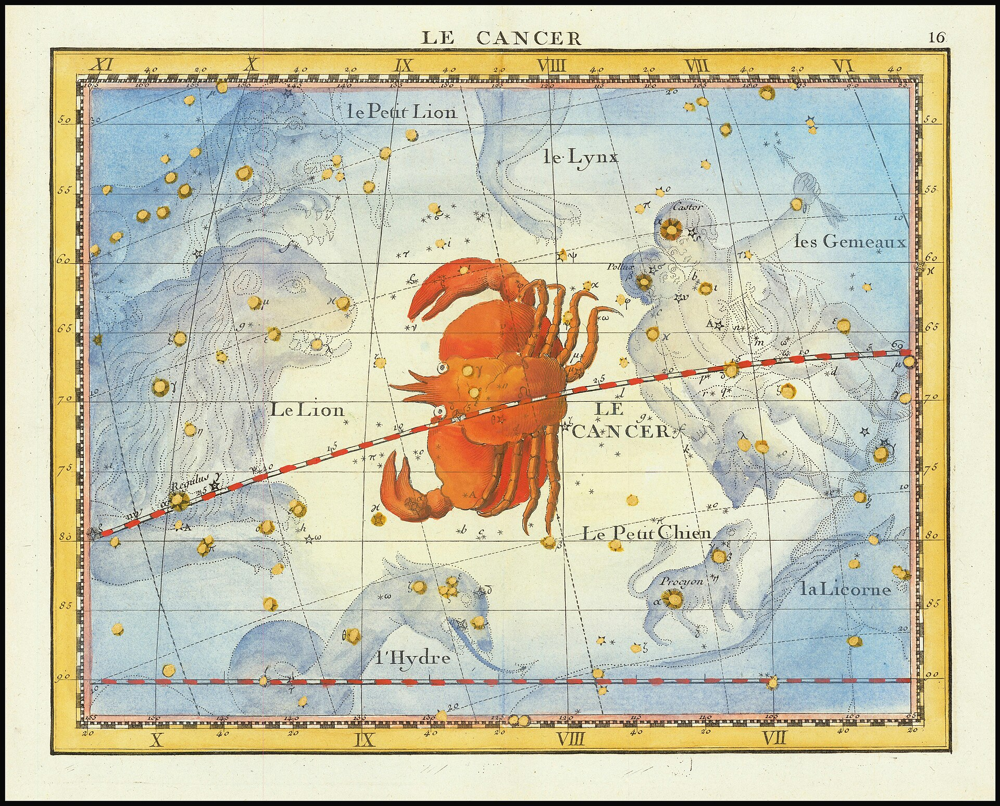

## To book
Writing stays quiet
Markdown marks show only on the line you're typing, so a note reads like a page. Keep twelve notes open as tabs, and go full screen when it's just you and the page.
What's inside
Write
- Markdown that stays clean
- Checklists
- Tags
- Folders inside folders
- Link previews
- Twelve notes open
- Full screen
- Summaries
A calm editor with the structure you want and none you don't.
Ask
- Answers from your notes
- Sources on every answer
- Reads unsaved changes
- Drafts as unsaved tabs
- Edits shown side by side
- Ten chats kept
Ask anything you wrote and get the notes it came from.
Tidy
- Bulk changes in words
- A tick box per change
- Clashes shown, not guessed
- Groups related notes
- Undo for ten days
- Never deletes for good
Big clean-ups that wait for your yes and can be undone.
Point at anything on the left.Each line is something Quill does today.
How a tidy-up goes
To begin, you ask in plain words, the way you'd ask a friend who knows where everything is. “Rename #reactz to #react and move them into Frontend.”
Within a second, every change is laid out with its own tick box. Nothing has happened yet. Where two changes disagree, the row turns amber and you choose.
When you apply, it all happens at once, and a small note rises from the dock with an Undo on it.
For ten days after, the receipt waits in Activity. If you edited a note since, Undo leaves your version alone and tells you so.
Every note
is a star



Notes that share a tag are joined by a line. Open the graph and your whole notebook reads like a sky.